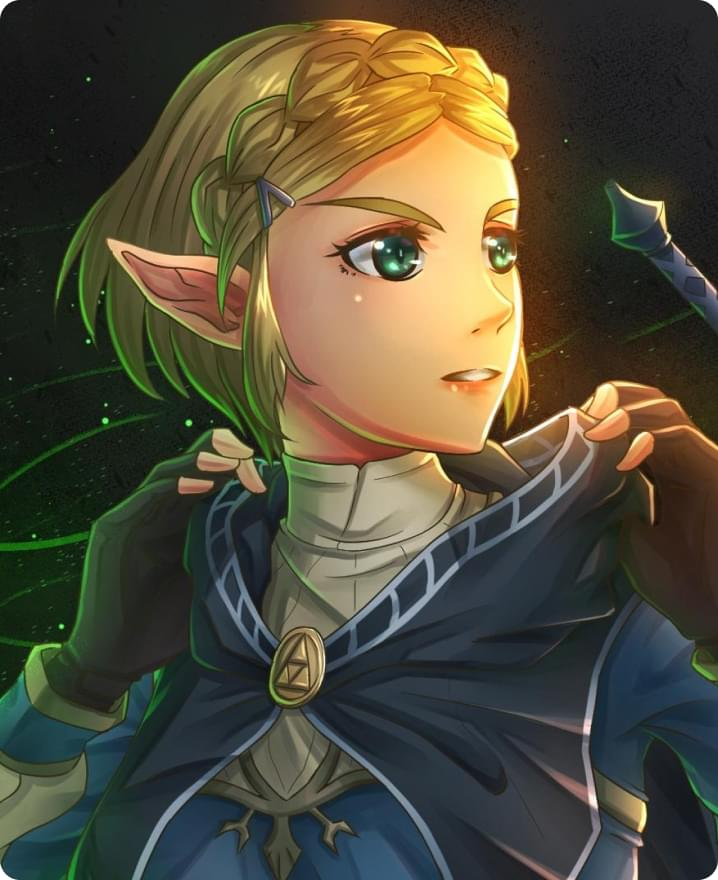
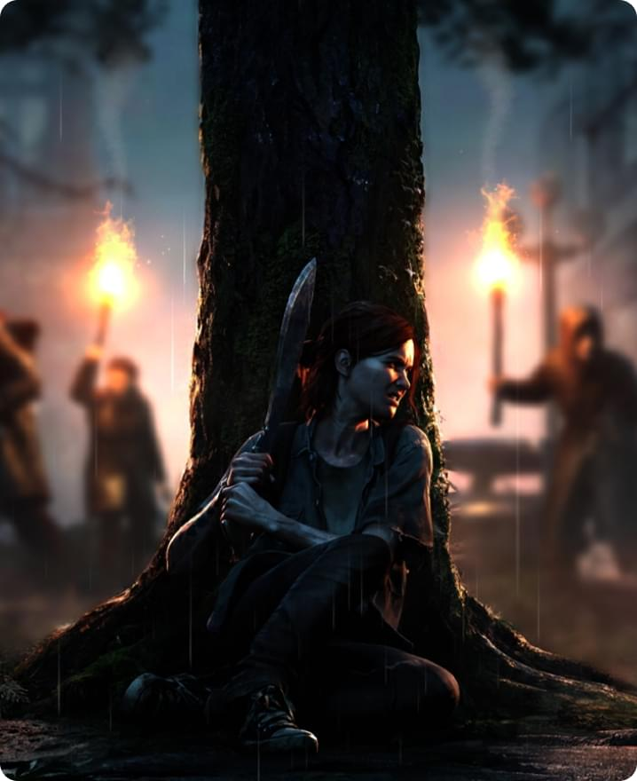
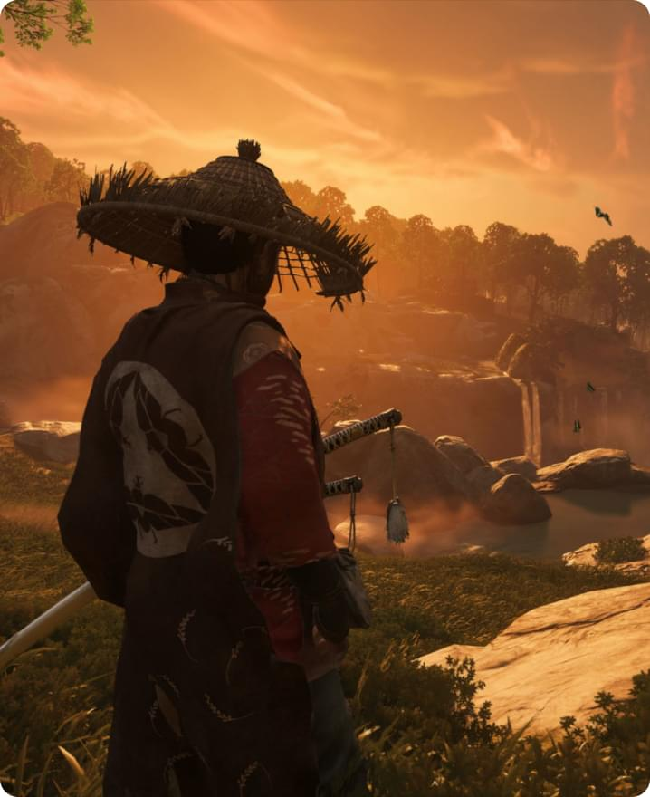

Mejor Lista de los mejores juegos en la consola de juegos.

The Legend of Zelda: Breath of the Wild
Acción
Aventura
Rol
Tercera Persona
Fantasía
Mundo abierto
The Legend of Zelda: Breath of the Wild es un juego que se encuentra legítimamente entre los mejores y más nuevos juegos de la lista de mejores juegos. Ella es un proyecto absolutamente asombroso que encarna el genio y la originalidad en la industria del juego. Breath of the Wild fue creado por Nintendo y es la última entrada en la serie The Legend of Zelda. En este juego, encontrarás un enorme mundo abierto para explorar a gran escala. El mundo está realmente vivo, lleno de varios efectos y una estética fenomenal.
Este juego también es conocido por su gran dificultad y formas creativas de explorar el mundo. Su característica principal es una jugabilidad única y absolutamente gratuita con posibilidades abiertas. El jugador tiene libertad de acción y, además, te obliga a pensar más allá de lo que sabes sobre los juegos estándar. The Legend of Zelda: Breath of the Wild no solo es mejor que los demás, es uno de los mejores juegos de todos los tiempos.

The Last of Us Part II
Acción
Aventura
Supervivencia
Sigilo
Posapocalíptico
The Last of Us Part II es un juego que está en discusiones candentes y los mejores juegos en la lista de los mejores juegos de la historia. Ella merece con razón estas características debido a su excelente trama, su estudio profundo y multifacético. Este juego es inigualable en su intensidad emocional y bellas imágenes. Last of Us Part II demuestra la habilidad de los creadores no solo en el diseño de gráficos y sonido, sino también en su jugabilidad. Aquí encontrarás muchos niveles que incluyen giros inesperados de los acontecimientos y múltiples formas de superar las dificultades. En este juego para ti, no experimentarás solo algunos únicos, sino que también disfrutarás de una interacción inolvidable de personajes que actúan de manera convincente y cobran vida en la pantalla.
Además, este juego es conocido por su reputación única en la industria del juego. Por eso The Last of Us Part II merece un lugar en los mejores juegos de todos los tiempos. Logra un equilibrio perfecto entre espectáculo y significado profundo, brindando una experiencia de juego inolvidable para todos los amantes de los juegos.

Ghost of Tsushima
Acción
Aventura
Mundo abierto
Sigilo
Ghost of Tsushima es otro nombre candente en el mundo de los videojuegos y uno de los mejores juegos jamás creados. Es conocida por su carácter único y su jugabilidad adictiva que le permite al jugador disfrutar de hermosos mundos abiertos e impresionantes batallas. Este juego se ha ganado su merecido lugar en la lista de los mejores juegos gracias a su increíble historia que sigue al protagonista mientras lucha por la libertad de su isla de los invasores mongoles. Ghost of Tsushima combina a la perfección elementos de la cultura oriental y la originalidad occidental para crear un estilo de juego único que te cautiva desde los primeros minutos. La jugabilidad de este juego también es una de las mejores en el género RPG de acción. Aquí encontrarás poderosas batallas que requerirán que pienses estratégicamente y con habilidad en las batallas. Además, el juego contiene numerosas misiones y misiones secundarias que brindan oportunidades únicas para explorar el mundo y desarrollar el personaje.
En general, Ghost of Tsushima es un juego increíblemente hermoso con una atmósfera única y una mecánica de juego fascinante que merece un lugar en la lista de los mejores juegos de todos los tiempos.